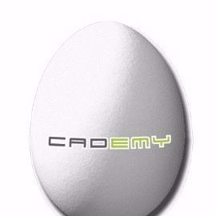
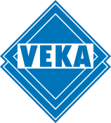

BERUFSWEG
Hier folgen Details zu meinem Berufsweg, einschließlich meiner Rollen, Verantwortlichkeiten und Errungenschaften.
 Ruhr-Universität Bochum | Lehrstuhl für Produktionssysteme
Ruhr-Universität Bochum | Lehrstuhl für Produktionssysteme
Wissenschaftlicher Assistent (07/2022 – 04/2023)
- Unterstützung und Beratung bei der digitalen Transformation von internationalen Unternehmen
- Erstellung von Selbstlernmodulen zu den Themen Industrie 4.0 und digitale Geschäftsmodelle
- Vorstellung der Selbstlernmodule im internationalen Projektkonsortium
- Durchführung von Workshops
Cademy GmbH
Bachelorand: Projektleitung (08/2021 – 03/2022)
- Eigenständige Entwicklung eines mobilen kollaborativen Robotersystems für die Automobilindustrie
Cademy GmbH
Fachpraktikant (03/2021 – 07/2021)
- Einarbeitung in folgende Themenbereiche: Controllino SPS (industrialisierter Arduino), Fahrerlose Transportsysteme, kollaborative Roboter, Konstruktion und Additive Fertigung
- Unterstützende Tätigkeit bei der Forschung für Trennmittelfreie Fertigung für das Fraunhofer Institut
- Vorbereitende und unterstützende Tätigkeit bei der Qualitätsprüfung
- Programmierung von Siemens LOGO Steuereinheiten
VEKA AG
Studentische Aushilfe (09/2019 – 10/2020)
- Mitarbeit bei der Kommissionierung und Verpackung